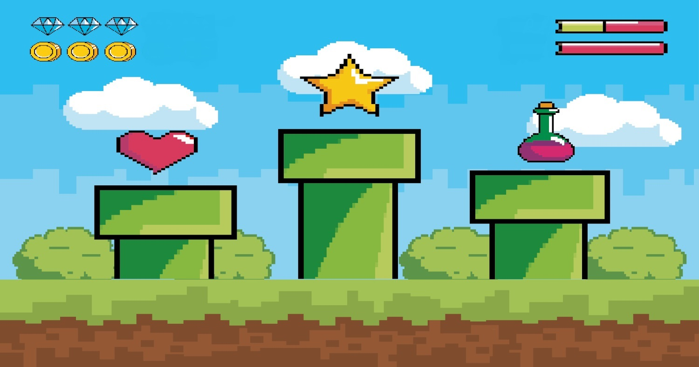
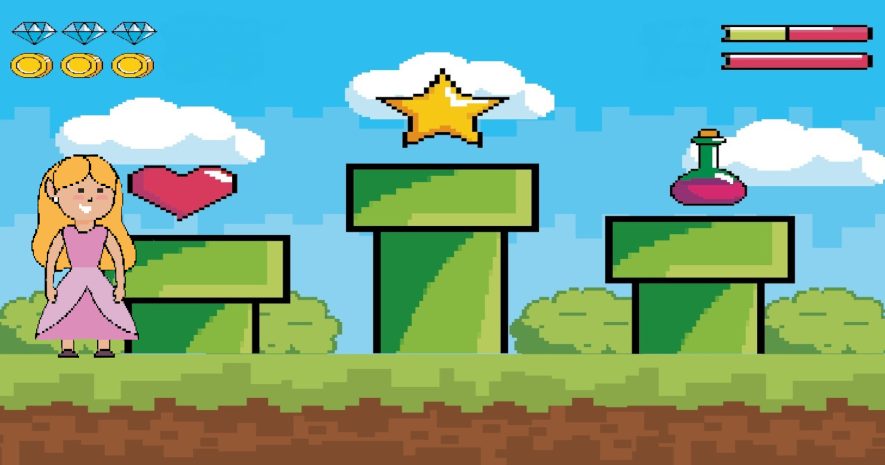

Josiane Lima
Creative Web Developer
About Me!
Hello, I'm Josi! This is me on the photo hugging one of the largest snakes in the world. I'm originally from Sao Paulo, Brazil, but throughout the years I've lived in different cities, states, or even countries. I'm keen on challenges and new experiences! I'm an English, Spanish and French teacher. At the moment, I'm also studying to become a software developer at the Bootcamp Trybe. Who knows what comes next?!
"Life is either a daring adventure or nothing at."